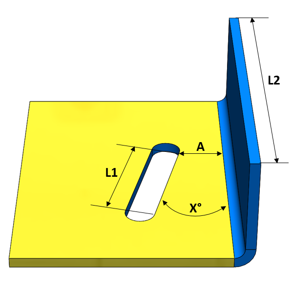

切り欠きのエッジと曲げの間の最小距離の比は、長さL1およびL2の最小値の(1/n)倍以上である必要があります。
切り欠きが曲げに近すぎると、曲げ加工中に変形します。切り欠きのエッジから内側曲げRの開始点までの距離が板厚の少なくとも2倍であれば、変形は最小限になります。
一般的なガイドラインとして、切り欠きから内側曲げRの開始点までの最小距離は、L1およびL2の最小長さの少なくとも1/10倍である必要があります。ユーザーは、長さL1とL2の間の角度を指定することで切り欠き解析を制限できます。推奨角度(X)は20°以下です。

ここでは、
A = 切り欠きから曲げまでの最小距離
X = 線（L1、L2）間の角度
注記:
面取り付きの切り欠きもサポートされています。
以下の標準形状の切り欠きが、「線長に基づく」でサポートされています。